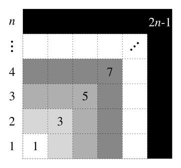
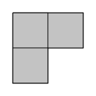
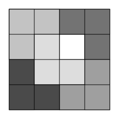
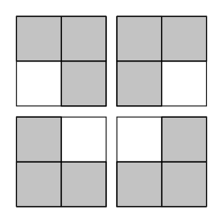
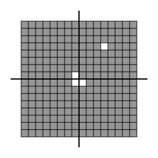

Mathematical Induction
Contents
This post is a much needed break from my steady stream of posts concerning topology. Before my next post on bases for topologies, I need to introduce a proof technique that I haven't used so far.
In mathematics, we come across patterns all the time. For instance, here's a pattern you may have noticed before:
$$\begin{align}
1 = 1\phantom{0} &= 1^2 \\
1+3 = 4\phantom{0} &= 2^2 \\
1+3+5 = 9\phantom{0} &= 3^2 \\
1+3+5+7 = 16 &= 4^2 \\
&\phantom{0}\vdots \\
1+3+5+7+\dotsc +(2n+1) &= n^2
\end{align}$$
It turns out that for any natural number $n$, if you add the first $n$ odd numbers the result is always $n^2$. (Remember that the $n$th odd number is $2n-1$.) Here's a visual depiction of the pattern:

From this image, it is evident that adding together the first $n$ odd numbers literally results in a square of side length $n$. But how can we come up with a convincing argument that this pattern always holds? In answering this question, we will discuss a method that can also be applied to many other similar problems.
The axiom of choice and well-ordering principle
Before we start, I should mention that you cannot do a proof by induction unless you accept the axiom of choice. The axiom of choice is an extra axiom of set theory which is somewhat controversial (among mathematicians). This is because at first glance it seems obviously true, but it actually leads to some bizarre and unexpected results.
Axiom of Choice. Suppose $I$ is an indexing set and $C$ is a collection of nonempty sets $X_i$ for each $i\in I$. Then there exists a function $f:C\to\bigcup\limits_{i\in I} X_i$ such that $f(X_i)\in X_i$ for every $i$.
In simpler words, the axiom of choice ensures that, given any number of nonempty sets, it is possible to choose precisely one element from each set. This is probably something you never would have dreamt was controversial, and it certainly seems like a natural assumption, but as I said before it allows for some strange results.
For instance, it leads to the Banach-Tarski Paradox, that is, the fact that given a solid ball in three dimensions ($\mathbb{R}^3$), it is possible to break the ball up into a finite number of disjoint pieces and rearrange these pieces using rigid transformations into two solid balls which are each identical to the original. This is perhaps at least slightly suspicious.
I'm always going to assume the axiom of choice, mostly because I like it and it makes a lot of proofs considerably easier. Sometimes it is the only thing that makes proofs possible at all, like the proof of the principle of mathematical induction. Which I promise I'm getting to.
For this proof, we're going to need the axiom of choice in a slightly different form. This form is actually so commonly referred to that it even has a special name. The axiom of choice is equivalent to the statement that any set can be well-ordered. I'm not going to go into orderings right now, but I will state what this means for the natural numbers because we'll need to use it in our proof.
Well-Ordering Principle. Any nonempty set of natural numbers contains a least element.
This assumes the ordering you're familiar with for the natural numbers. You know, the one where $0<1<2<3$ and so on. This only holds because the natural numbers are bounded below. That is, there is a smallest natural number: $0$. If we wanted to extend this principle to the integers, we'd have to add the condition that our nonempty set of integers has a lower bound.
The well-ordering principle should hopefully seem very obvious to you as well, and I'm not going to show how it implies the principle of mathematical induction.
The principle of mathematical induction
I'll stop beating around the bush and just do the thing already.
Principle of Mathematical Induction. Suppose P(n) is a (true/false) statement about a natural number $n$, and that the following two criteria hold:
- Base Case: $P(0)$ is true.
- Inductive Step: If $P(n)$ is true for some $n\in\mathbb{N}$ then so is $P(n+1)$.
Then $P(n)$ is true for every $n\in\mathbb{N}$.
Proof. We give a proof by contradiction. That is, we're going to assume that the statement is false and show that this leads to an absurd result. We will then be forced to accept the principle of mathematical induction because we will have shown that it cannot be false.
Suppose then that both criteria hold, but that $P$ is not true for at least one natural number. Let $S$ denote the set of natural numbers for which $P$ is false. By assumption, $S$ is not empty, so the well-ordering theorem tells us that $S$ contains a least element. Call this element $x$. Then $x-1\notin S$ since $x$ is the smallest element of $S$. That is, $P(x)$ is false but $P(x-1)$ is true. However, the second criterion tells us that $P\big((x-1)+1\big)=P(x)$ must be true. This is a contradiction, since $P(x)$ cannot be simultaneously true and false. It follows that $P(n)$ is true for every natural number $n$.
The proof is not terribly important, so don't spend too much time dissecting it. What really matters to us is the statement itself, which might seem daunting at first, so let's break it down piece by piece.
We start off with a statement which is either true or false depending on what number we feed it. The following are examples of such statements[1]:
- $P(n):=n$ is a prime number.
- $Q(n):=n$ sandwiches are on fire.
- $R(n):=1+3+5+\dotsc+(2n-1)=n^2$.
- $S(n):=$ the $n$th domino will fall over.
If we want to show that such a statement is true for all natural numbers, we must first verify the base case, which means showing that if we set $n=1$ then the resulting statement is true. This is usually the easy part of a proof by induction, but it is still necessary.
The last thing we have to do is show that if the statement holds for an arbitrary natural number $n$, then the statement also holds for $n+1$. This is the inductive step, which is usually where the most work and insight are needed.
If we can do these two things, then we have shown that the statement is true for every natural number! Just remember: base case, then inductive step. Now let's look more closely at the example statements from above:
By definition, $P(n)$ is true only when $n$ is prime. For instance, $P(1)$ is false because $1$ is not prime, but $P(2)$ is true because $2$ is prime.
On the other hand, $Q(n)$ is presumably false for all $n>0$. I, for one, have never seen an exploding sandwich.
$R(n)$ is the same statement we discussed earlier: that the sum of the first $n$ odd numbers is $n^2$. We will come back to this in a few moments and show it to be true for any $n$ using an inductive argument.
For now, let's focus on $S(n)$ because it is a helpful and illustrative example of why induction works. Suppose we have a line of dominoes extending infinitely to the right, all standing up and close enough together that if one falls over it will hit the next domino in line:
What are the base case and inductive step for this example? The base case would be $S(1)$, which corresponds to whether or not the first domino will be knocked over. The inductive step is the fact that, if the $n$th domino falls, then the $(n+1)$th domino will also fall. The inductive step is clearly true because each domino knocks over the next one when it falls. However, if the first domino is never knocked over, none of the other ones will be either. This illustrates the importance of the base case! If the base case does not hold, then a proof by induction is invalid even if the inductive step does hold.
So in other words, if we know for certain that the first domino will fall, this means that every domino will fall because we have verified both the base case and the inductive step.
The argument we have just given shows an infinite number of things to be true! This is part of the power of inductive arguments.
Examples
Let's now prove that the pattern I introduced at beginning of this post always holds.
Theorem. For any $n\geq 1$,
$$1+3+5+\dotsc+(2n-1)=n^2.$$
Proof. We give a proof by induction on $n$.
For our base case, we need to show that the statement is true when we let $n=1$. This is simple enough, because $1$ is certainly the sum of the first $1$ odd numbers, and it is equal to its square. That is, $1=1^2$, so we have shown that our base case is true.
Now for the inductive step. We will assume that
$$1+3+5+\dotsc+(2n-1)=n^2,$$
and use this to show that
$$1+3+5+\dotsc+(2n-1)+(2n+1)=(n+1)^2.$$
This requires a tiny bit of algebraic manipulation, but isn't at all difficult:
$$\begin{align}
1+3+5+\dotsc+(2n-1)+(2n+1) &= n^2+(2n+1) \\
&= (n+1)^2.
\end{align}$$In the first step above, we used our assumption that the sum of the first $n$ odd numbers is $n^2$ and substituted this result into the equation. In the second step, we factored our resulting quadratic, and subsequently showed that our inductive step holds.
It follows from the principle of mathematical induction that our assertion is true.
This proof is a good indicator of a trend that such proofs tend to follow. If we can show that the base case is true, we can frequently break down the statement for higher numbers into smaller pieces and then use our base case to glue everything back together.
In my first post on set theory, I stated without proof that De Morgan's Laws extend to arbitrary collections of sets. I still won't prove that in full, but I'll prove something that's nearly as powerful.
Theorem. Let $A_1,A_2,\dotsc,A_n\subseteq X$. Then
$$X-\bigcup\limits_{i=1}^n A_i=\bigcap\limits_{i=1}^n (X-A_i).$$
Proof. We proceed by induction on $n$. For our base case, we choose $n=2$. That is, we need to show that
$$X-(A_1\cup A_2)=(X-A_1)\cap (X-A_2).$$
But this is just one of De Morgan's Laws, which we already know to be true! So we don't actually have to do any work to establish that the first criterion holds.
Next, let $n\geq 2$ be a natural number and suppose that
$$X-\bigcup\limits_{i=1}^n A_i=\bigcap\limits_{i=1}^n (X-A_i).$$
It is easy to see that
$$\begin{align}
X-\bigcup\limits_{i=1}^{n+1}A_i &= X-\left(\bigcup\limits_{i=1}^nA_i\cup A_{n+1}\right) \\
&= \left(X-\bigcup\limits_{i=1}^nA_i\right)\cap (X-A_{n+1}) \\
&= \bigcap\limits_{i=1}^n(X-A_i)\cap(X-A_{n+1}) \\
&= \bigcap\limits_{i=1}^{n+1}(X-A_i).
\end{align}$$This completes the proof.
Let's look at another example. This is one of my favorites, and it lends itself nicely to a visual representation.
Theorem. A $2^n\times 2^n$ checkerboard can be covered by L-shaped tiles, with the exception of one arbitrary square.
Proof. Let's break down this statement a little bit first. When we talk about a $2^n\times 2^n$ checkerboard, we are talking about a square board with sides of length $2^n$. So
- $n=1$ corresponds to the $2\times 2$ board,
- $n=2$ corresponds to the $4\times 4$ board,
- $n=3$ corresponds to the $8\times 8$ board, etc.
For instance, here is the $2^3\times 2^3$ checkerboard:
By 'L-shaped tile,' we mean a tile comprised of three squares which is shaped sort of like the letter L:

Lastly, when we say that a board can be covered by these tiles with the exception of one arbitrary square, we mean something like this:

It's important to point out that we could have left out any one square on the board above and still been able to tile the rest of the board. It does not matter which square we choose to exclude; we should still be able to cover the rest of the board. Try playing around with boards of different sizes, leaving one random square empty, and trying to come up with such a tiling. For larger boards, this quickly becomes no easy task.
Now that we have a better understanding of the problem, it is our goal to show that we can cover any $2^n\times 2^n$ board in this manner, and we will do so by induction on $n$.
For our base case ($n=1$), we must show that the $2\times 2$ board can be tiled by L-shaped tiles, no matter which square we choose to omit. Since there are only four squares on this board, we can 'brute-force' the base case by demonstrating that with any square ommitted, the rest of the board can be tiled quite trivially using a single L-shaped tile:

We have shown that any $2\times 2$ board can be covered in the desired manner, so the base case has been verified.
Next we argue the inductive step. We begin with the assumption that for an arbitrary $n\geq 1$, we can cover the $2^n\times 2^n$ checkerboard (with any one arbitrary square omitted) as desired. We must use this information to show that we can then tile the $2^{n+1}\times 2^{n+1}$ board in the same manner.
Notice that if we are given a $2^{n+1}\times 2^{n+1}$ board, the missing tile will necessarily lie in precisely one of its four quadrants:
But each of these quadrants is actually a $2^n\times 2^n$ board, which we already know can be covered! So one of our quadrants has a missing tile already chosen for us, and the other three quadrants we can cover however we choose. So we do so in the following crafty way:

We've now covered the entire $2^{n+1}\times 2^{n+1}$ board with the exception of our arbitrary missing square and a nice L-shaped hole in the middle, which we can fill in with a single L-shaped tile, leaving only the chosen square uncovered. We have thus shown that the inductive step holds, completing the proof.
I think that's more than enough for one post, so I'm going to leave it at that. We will be using induction for many of our future proofs, though, so this won't be the last time you'll see it!
The symbol $:=$ means 'is defined as.' ↩︎